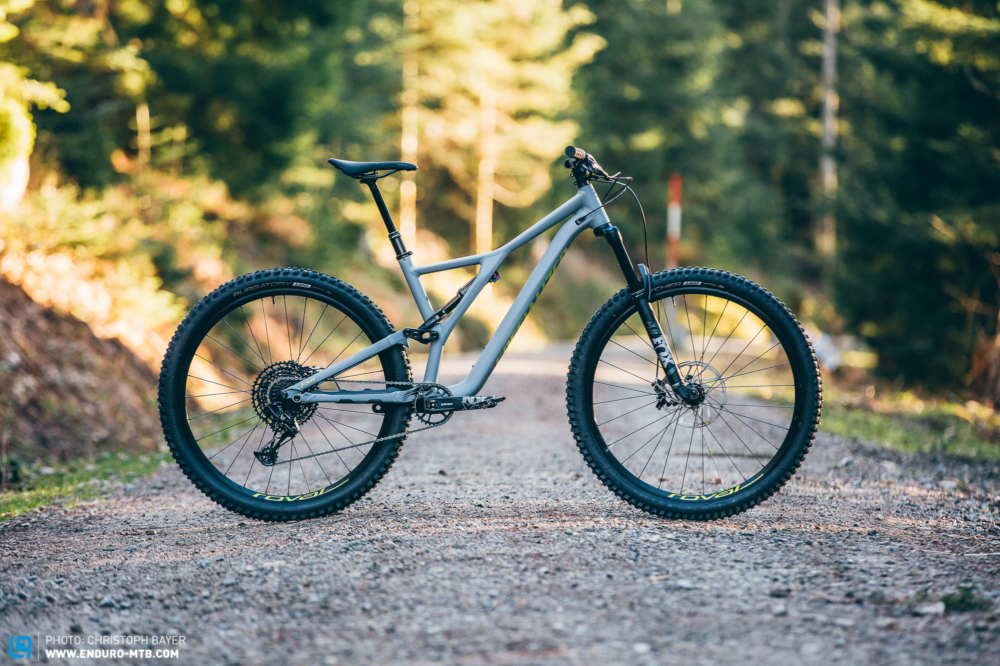

About bike
Photo of Frame:

The StumpJumper is the ulitmie trail bike
Quick links to parts
Bike parts
I can use this on my next website:
- Wheels
- Pedals
- Fork
- Rear shock
I'm want to get all the parts separate

i also love builing suff, i am doing a frame upbuild to build my perfect bike.
i want a more downhill trail bike that isn't hard to climb with like Enduro
Why a StumpJumper?
This will be my second semeter senior project

Less is more
With the Stumpy as your weapon of choice, you can easily take on long and rough alpine descents, or even sign up for the occasional enduro race, as long as you upgrade the brakes first. However, due to its short reach, it isn’t the most composed bike in the test field either.